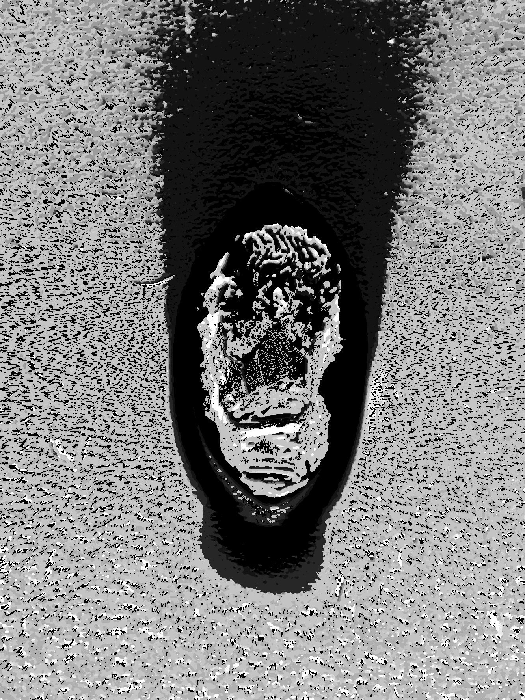
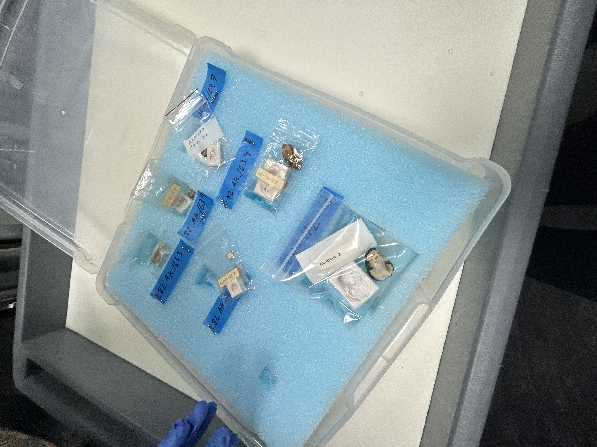
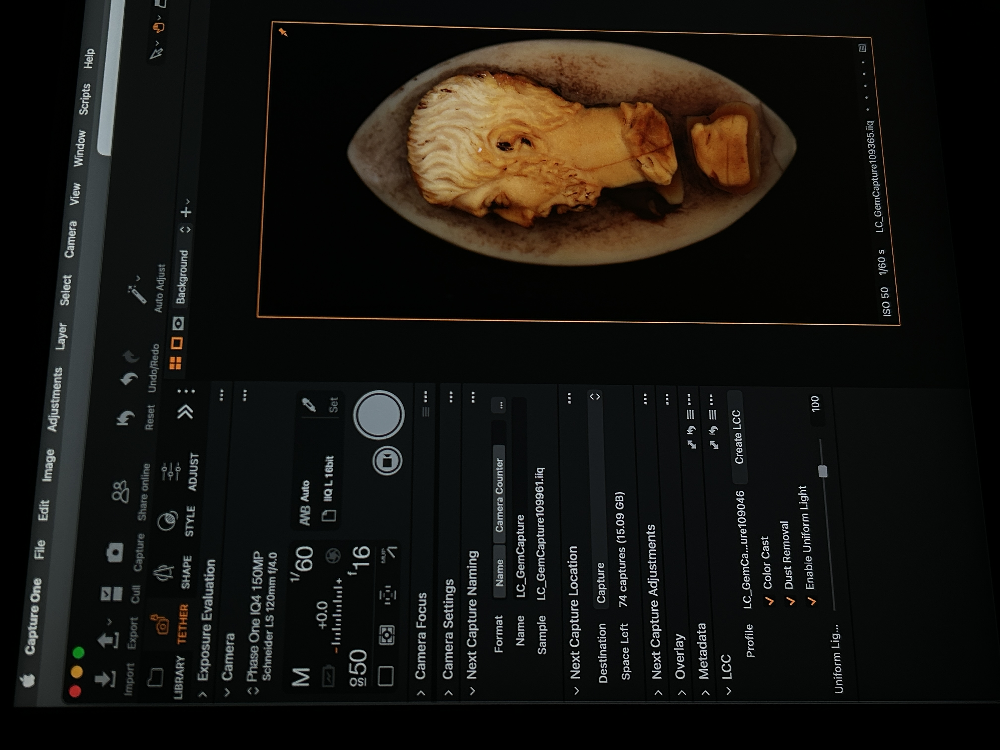
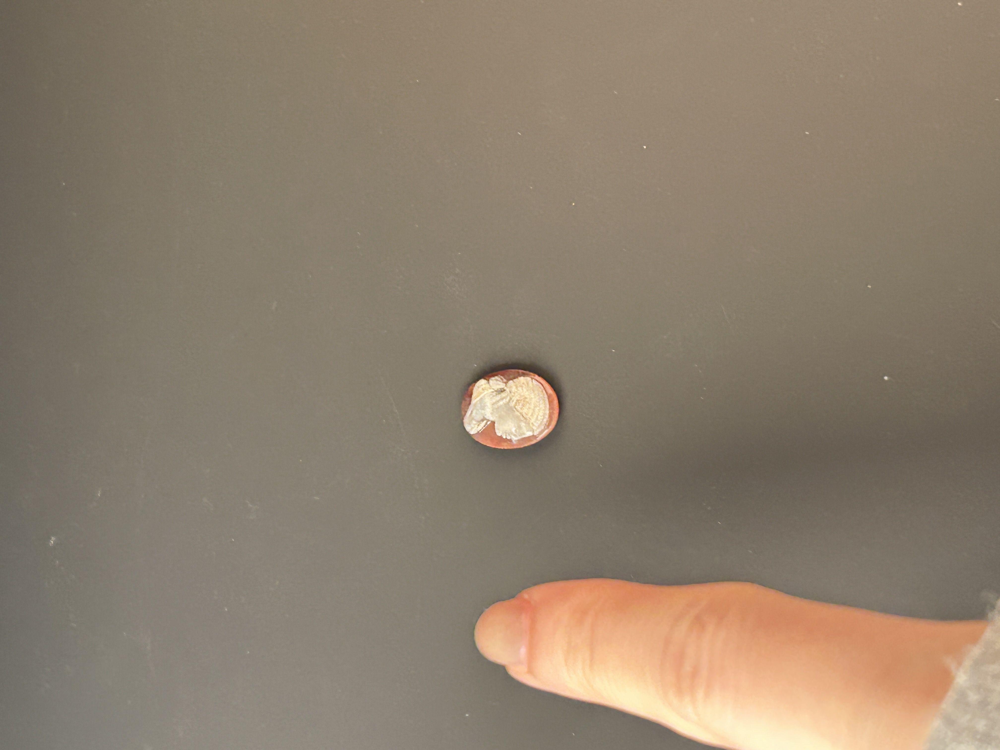
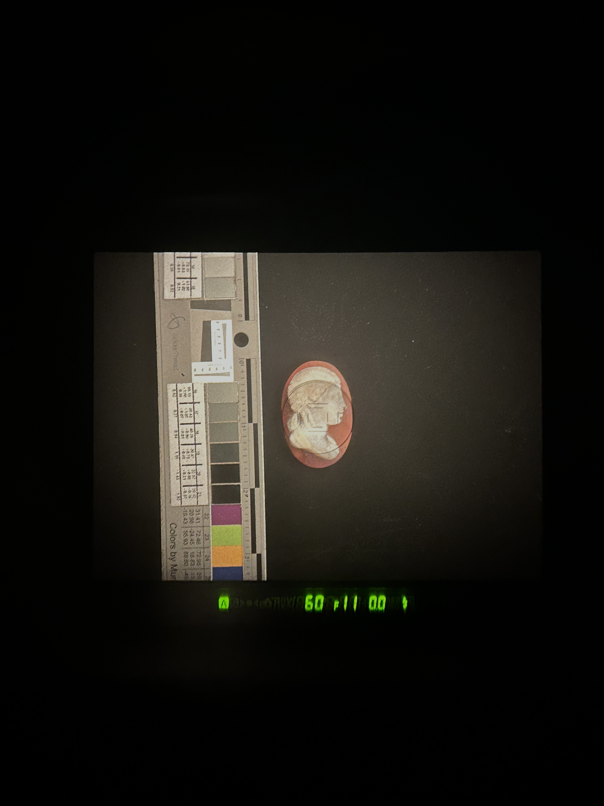

Question
Can a museum recover usable 3D geometry from cameo glass with the imaging equipment it already owns?
Context
Cameo glass artifacts are carved, reflective, and translucent — the exact combination that defeats the standard 3D capture toolkit. Photogrammetry, LiDAR, and structured light all fail here: there's no clean multi-view capture to stitch and no predictable reflectance to exploit. The Getty Museum has these objects in its collection and no reliable way to digitize their surface geometry.
Experiment & technical approach

Rather than ask the museum for new hardware, I built single-view depth extraction on top of Capture One Pro and a Phase One camera — the exact setup already used for beauty photography of the collection. I wrote the reconstruction pipeline myself and validated it on 10+ real artifacts, producing depth maps that Getty imaging specialists and conservators used directly.

The idea generalizes past this collection. Any museum with a standard beauty-photography rig — most of them — could extract usable 3D depth with zero new capital equipment, opening doors to 3D printing, merchandising, and digital preservation.
Implications
The useful outcome is a method, not a device: 3D depth recovery folded into an imaging workflow institutions already run every day. I'm a CS+Arts undergrad who builds this way solo — research into a real tool, on hardware that already exists. I've also shipped a deployed 3DGS heritage-annotation app (room.loriechen.com) and an audio-reactive visual instrument (synthsplat.loriechen.com).
documentation



